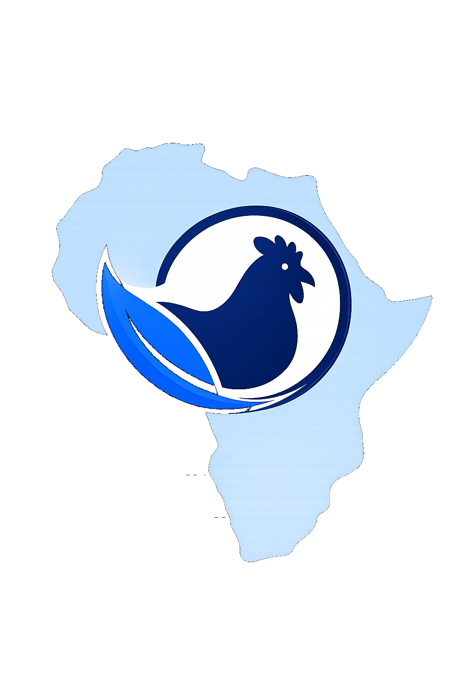

Advancing Research-Driven Change in AfricaBetter lives for farmed animals
Stronger futures for communities
AFANA works with farmers, researchers, and communities in Nigeria to improve the welfare of farmed animals because healthier animals mean healthier food systems and better livelihoods for everyone.

Animal welfare and community welfare go hand in hand
AFANA Animal Futures is a Nigeria-based organisation using research and evidence to improve conditions for farmed animals and, in doing so, to support healthier communities and more sustainable food systems across Africa.
We call this the One Health approach: recognising that the welfare of animals, people, and the environment are deeply connected.
Every intervention we design is grounded in evidence, co-created with the people closest to the problem, and aimed at changes that work in the real conditions of livestock farming.
Our Full StoryThree pillars — one goal
Everything we do falls into one of three connected areas — each reinforcing the others, all aimed at lasting welfare improvements.
Research & Evidence
We study farmed animal welfare and health in Nigeria and how conditions connect to human livelihoods and the environment.
- On-farm welfare assessments
- One Health research partnerships
- Evidence to guide programmes
Advocacy & Capacity Building
We turn evidence into action by designing practical interventions and training the people who care for animals every day.
- Farmer and veterinary training
- Practical welfare interventions
- Policy and institutional engagement
Community & Public Engagement
We build lasting partnerships and help the public understand why animal welfare matters for everyone.
- Local group partnerships
- Public education campaigns
- Cross-organisation learning
"We started AFANA because we kept seeing the same story: animals suffering, farmers struggling, and communities left out of decisions that affect them all. We believe there's a better way, one grounded in evidence, and built with the people closest to the problem."— Farhan & Kaosarah, Co-Founders, AFANA Animal Futures
Ready to make a difference?
Whether you want to partner, volunteer, donate, or simply stay in the loop, there's a place for you in AFANA's work.